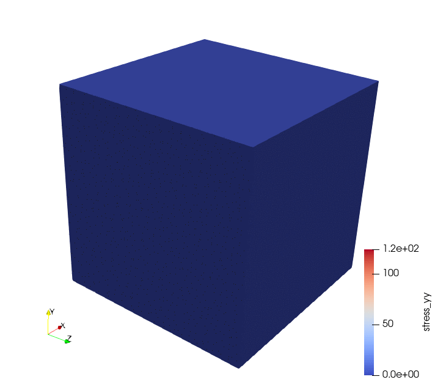
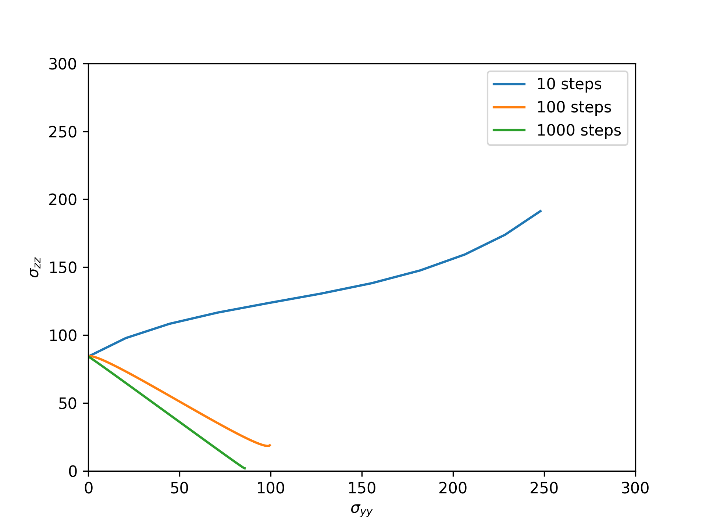
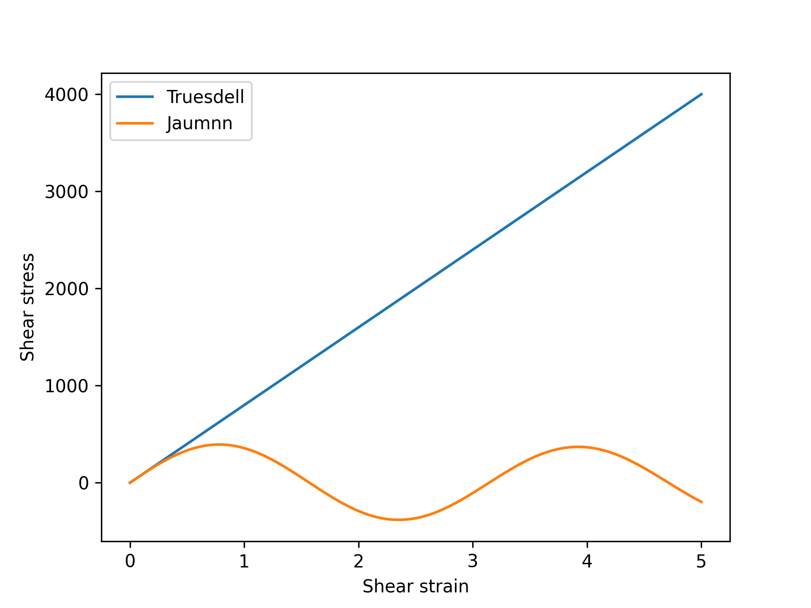

ComputeLagrangianObjectiveStress
Overview
This class is a bit different from the other constitutive model base classes. It provides an interface for implementing a constitutive model using the traditional small deformation, engineering stress and strain measures that translates this natively small deformations constitutive model to provide a suitable response for a large deformation formulation, as implemented in the total Lagrangian and updated Lagrangian kernels. Specifically, the class provides a way to calculate the Cauchy stress given the small, engineering stress and to convert the algorithmic tangent provided by an engineering stress/strain model to a suitable large deformation tangent tensor.
The user then implements the small stress update and the associated derivative with respect to the engineering strain The class then converts these measures to the updated Cauchy stress and the tangent required by the parent class ComputeLagrangianStressCauchy.
Conversion
The class converts the small strain model by integrating an objective rate of the Cauchy stress Simo and Hughes (2006). There are a wide variety of objective rates described in the literature and the implementation in the Solid Mechanics module provides a general form in which different rates can be implemented. The current implementation provides two options: the Truesdell rate of the Cauchy stress and the Jaumann rate of the Cauchy stress. The implicit version of the commercial ABAQUS FEA code uses the Jaumann rate, so enabling this option allows users to compare results to that product.
This conversion only needs to happen for large deformation kinematics. The ComputeLagrangianObjectiveStress base class takes the large_kinematics flag as input and only performs the objective integration process if it is set to true.
The process starts by updating the small stress using the user-provided constitutive model, defined (typically) in terms of the mechanical strain tensor. However, as with all constitutive models designed for use with the Lagrangian kernels, the user can define the stress update in terms of any kinematic measures provided by the strain calculator.
Most objective rates take the form where is some kinematic measure and is the small stress, supplied by the constitutive model. This equation basically advects the stress using the kinematic tensor. The suggests that multiple objective rates of the Cauchy stress are possible – i.e. there is no unique, universally accepted theory. The choice of the kinematic tensor defines the particular objective rate, so long as the model returns the correct tangent matrix .
The conversion process in ComputeLagrangianObjectiveStress must solve this equation to find the updated Cauchy stress for an arbitrary kinematic measure . For the Truesdell, Jaumann, and Green-Naghdi rates this update is linear and the solution for the updated Cauchy stress is where is the increment in the small stress over some time step and with , i.e. the increment in the kinematic tensor.
The algorithmic tangent required by ComputeLagrangianStressCauchy is then given by where the tensor is another characteristic of the objective rate. Rather than implement a 6th order tensor, the class instead implements a function giving the action of this tensor on the Cauchy stress, i.e. The two tensors and then fully-define a particular objective rate. The Rashid rate described below does not fit this linear template and instead provides its own update directly.
The increments and consumed by these rates are supplied by ComputeLagrangianStrain and depend on the active kinematic approximation. The four rates here work with any of the four approximations.
All directional components of the constitutive model should be advected using the selected objective rate integration. This applies to the stress tensor, as described here, but also any directional internal variable used by the stress update model. This class cannot automatically perform this advection, meaning it is up to the model implementer to do it if require. Note this warning does not apply to the common case of scalar internal variables, as these have no associated direction.
Specific Objective Rates
The ComputeLagrangianObjectiveStress class chooses between different objective rates with the objective_rate input parameter. Currently there are four choices for implemented rates: the (default) Truesdell rate, truesdell, the Jaumann rate, jaumann, the Green-Naghdi rate, green_naghdi, and the Rashid rate, rashid.
The Truesdell Rate of the Cauchy Stress
The Truesdell objective rate is defined by the kinematic tensor and the derivative tensor
The Jaumann Rate of the Cauchy Stress
The Jaumann objective rate is defined by with and the associated derivative tensor
Applying the method is equivalent to updating the stress with the Hughes-Winget method Hughes and Winget (1980).
The Green-Naghdi Rate of the Cauchy Stress
The Green-Naghdi objective rate is defined by
The Green-Naghdi rate can be specified by objective_rate = green_naghdi.
Let be the derivative tensor of the Truesdell rate, the associated derivative tensor of the Green-Naghdi rate can be written as
The chain rule further expands this as while the first and the third derivatives on the right hand side are trivial, the second one is more involved: where
The Rashid Rate of the Cauchy Stress
The Rashid rate Rashid (1993) does not fit the linear advection template used by the three rates above. Instead, it rotates the incrementally-updated Cauchy stress by a finite rotation built from the incremental vorticity: where is the incremental vorticity supplied by ComputeLagrangianStrain consistent with the active kinematic approximation. The matrix exponential of the skew tensor is evaluated in closed form by Rodrigues' formula, so any number of integration steps reproduces the correct rotation exactly.
The Rashid rate is selected by objective_rate = rashid.
This rate is the integration used by the legacy StressDivergenceTensors + ComputeFiniteStrain pipeline. Pairing objective_rate = rashid with kinematic_approximation = rashid_approximate or rashid_eigen on the strain calculator reproduces the legacy update bit-for-bit; see the QuasiStatic Physics action's compatibility mode for the automatic wiring.
The algorithmic tangent is the sum of three contributions: with , and the eigenstrain coupling needed by ComputeLagrangianStressCauchy is
Problems With Objective Rates
There are several well-known problems associated with integrating objective rates to provide large deformation constitutive models based on small strain theory Simo and Hughes (2006) and Bažant and Vorel (2014).
Integrated rotations
A typical use for objective rate integration is to provide a constitutive model for materials that only undergo relatively small stretches in a simulation that will require large rotations. For example, a user might want to simulate a cold work forming process for a metal part, where the material will not under large strains but will undergo large rotations. One challenge with objective rate integration as implemented here is that the rotation kinematics are integrated in time, rather than being applied directly from the simulation kinematics. This means that the models will accurately capture large rotations but only in the limit of zero time integration error. In theory then, the rotational kinematics are only correct for infinitesimal time steps.

Figure 1: Simulation of stretch plus rotation for an elastic material.
The animation in Figure 1 illustrates one simple example: a block of material is stretched, developing some stress, and then rotated . A correct simulation of this process would first develop stress in the -direction and then keep the magnitude of the stress constant as the block of material rotates. Figure 2 shows the and components of the Cauchy stress, as integrated for an elastic material with the Truesdell rate, during this process for different numbers of integration time steps during the rotational part of the deformation. For large numbers of time steps the simulation results are correct: the component of the Cauchy stress at the end of the simulation is equal to the initial stress and the component goes to zero as the block rotates. But for fewer steps the rotational process is not integrated exactly, leading to errors in the final stress tensor.

Figure 2: Plot of and in the cube as it rotates, for different numbers of time steps.
This rotation without additional stretch is not a typical simulation. More often, a simulation would be deforming the material during the large rotations, which in turn requires a smaller time step to accurately resolve the material deformation itself. However, this example does illustrate one of the shortcomings of this particular implementation of objective integration for the Truesdell, Jaumann, and Green-Naghdi rates. Note this is not a generic shortcoming of objective rates: the rashid option in this class integrates the rotational kinematics by closed-form matrix exponential of the incremental vorticity Rashid (1993) and so reproduces the correct rotation exactly regardless of the time increment.
Large shears
Models may exhibit anomalous, unphysical behavior when subjected to large shear deformations. Figure 3 compares the results of shearing a block of material to very large shear strains using both the Truesdell and Jaumann rates. The shear stress/strain response for the Jaumann model oscillates, which is not a reasonable, physical response for the elastic material. The Truesdell rate, which is used by default by ComputeLagrangianObjectiveStress models, avoids this non-physical behavior.

Figure 3: Shear stress/shear strain plot comparing the Truesdell and Jaumann rates for very large shear deformations.
Recommendations
For problems where the material will undergo very large stretches or a combination of large stretch and rotation the user should consider defining the constitutive response with a hyperelastic formulation, for example using the ComputeLagrangianStressPK1 or ComputeLagrangianStressPK2 base classes.
When porting an input from the legacy StressDivergenceTensors + ComputeFiniteStrain pipeline and bit-for-bit agreement with the old results is desired, use objective_rate = rashid and pair the strain calculator with kinematic_approximation = rashid_approximate or rashid_eigen. The QuasiStatic Physics action's compatibility mode configures this combination automatically.
References
- Zdeňek P Bažant and Jan Vorel.
Energy-conservation error due to use of green–naghdi objective stress rate in commercial finite-element codes and its compensation.
Journal of Applied Mechanics, 2014.[Export]
- Thomas JR Hughes and James Winget.
Finite rotation effects in numerical integration of rate constitutive equations arising in large-deformation analysis.
International journal for numerical methods in engineering, 15(12):1862–1867, 1980.[Export]
- MM Rashid.
Incremental kinematics for finite element applications.
International Journal for Numerical Methods in Engineering, 36(23):3937–3956, 1993.[Export]
- Juan C Simo and Thomas JR Hughes.
Computational inelasticity.
Volume 7.
Springer Science & Business Media, 2006.[Export]